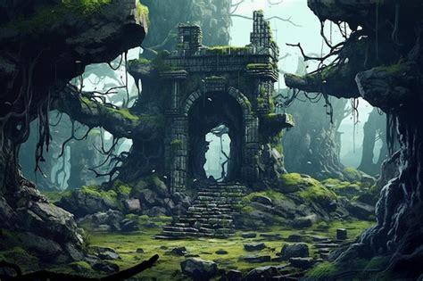
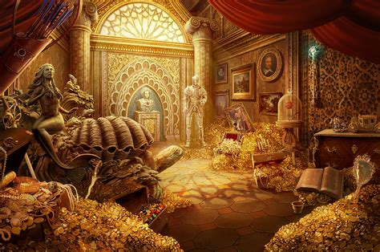

Nach einem Langen fussmarsch entedckst du etwas das wie alte ruinen einer Burg aussieht. Steinernde Säulen und Torbögen. Du schreitest mit wachsamen auge durch die vergessenen Trümmer. Du kommst an ein altes überwachsenes Gebäude, welches grade so noch zu stehen scheint. Du beschliesst das Innere des gebäudes zu untersuchen, möglicherweise befinden sich noch schätze darin. Das Innere ist genauso verwittert wie das äussere. In einer Ecke des raumes befindet sich eine Treppe. Nach unzähligen Treppenstufen endest du in einem vorraum eines grossen Tresors dessen tür einen spalt geöffnet ist. Als du die tür aufziehst strahlt dir ein Goldener glanz entgegen, wie du ihn noch nie gesehen hast. Du scheinst der erste zu sein der diese vergessene Ruine je entdeckt und untersucht hat.

Du bist Reich herzlichen glückwunsch. Möchtest du dein glück noch über andere wege herausfordern?
Zurück zum start